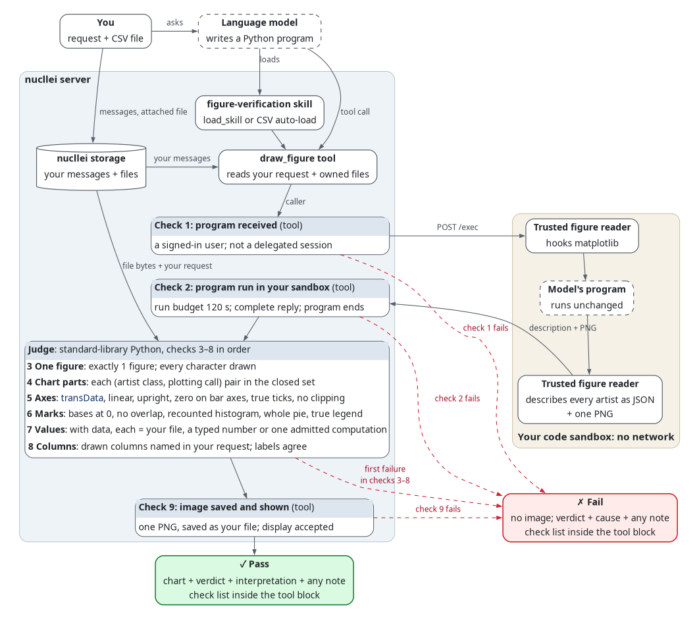

Figure checks for nucllei
Every rule a chart must pass through draw_figure, in run order: what the verifier checks,
how it checks it, and the code that a failure shows. Open the collapsed tool block to read the
check list. Each row links to its section here. Full rules (online) describes the
shared figure rules and the Open WebUI transport. Examples: Gallery.
日本語版
How the verifier works

Each check shows a one-line summary; the tables below list every rule. Dashed boxes: what the language model writes. Red dashed arrows: where a failed check stops the chart.
- Load. nucllei loads the
figure-verificationskill throughload_skill, or automatically for a CSV attachment. The skill makesdraw_figureavailable to the model. - Call. The model sends one complete Python program to
draw_figure. The tool reads your own messages and files from the stored chat branch. It checks the caller before any run. - Run and read. The tool first writes each attached file to
/workspace/imports/with the sandbox's file write, which follows no links. Then it sends one/execrequest to your code sandbox, with the trusted figure reader and the program, unchanged. The reader hooks matplotlib, runs the program and draws each figure once. It reports every artist as JSON: class, plotting call, transform, coordinates, axes, ticks, colors, sizes, visibility and the recorded inputs ofhist,pie,fill_betweenandstackplot. It also returns one PNG. There is no separate receipt or browser code runtime. - Judge. On the nucllei server, standard-library Python applies the rules below to that description, in order. The first failure stops the chart. The judge compares drawn values with your files and request. No model and no guesswork take part.
- Display. On a pass, the tool saves the PNG as your file and shows it with the verdict, interpretation and any model note. On a failure, it shows the verdict and cause, without an image or a note. These appear outside the collapsed tool block. The check list appears inside that block and also reaches the model. If the display fails, read the cause in the tool result.
Not checked: whether the chart answers your question; text on the chart (text, annotate,
bar_label), which the reply lists; the model's note or its reply text; the program itself.
The program must be non-adversarial: it runs before the checks, in the reader's interpreter,
and can read your attached files. The verifier trusts the sandbox, interpreter, matplotlib,
fonts, browser and pixels. The sandbox has no network. Other tools, such as run_python and
fetch_from_workspace, can show a chart outside this skill and its checks.
1. Chart program received from the model
| Rule | How | Code |
|---|---|---|
| request from a signed-in user | draw_figure receives the caller's user id |
no_user |
| call in the user's chat, not a delegated session | the tool refuses a call whose metadata names agent_session, before reading files or running code |
delegated_session |
2. Program run in the code sandbox
| Rule | How | Code |
|---|---|---|
| the code sandbox answers | one POST /files/write per attached file, then one POST /exec, through nucllei's sandbox client; a connection failure blocks |
sandbox_unreachable |
| program within the sandbox's time limit | waits at most 120 s for each file write, requests 120 s for the run and waits at most 150 s for its reply; the sandbox can apply a shorter limit | sandbox_timeout |
| the sandbox run succeeds | an HTTP refusal of a file write or the run, or a nonzero exit_code, blocks |
sandbox_error |
| complete reply in the expected format | exit_code is an integer, stdout is text within the reader's output bound, and stdout_truncated is false |
reply_malformed |
| run reports its figure | stdout holds one parsable, tagged description line |
no_description |
| valid Python | the reader compiles the program; no SyntaxError |
program_syntax_error |
| program runs to its end without an exception | the reader runs the program and catches any exception with its line | program_error |
| imports available in the code sandbox | the exception is no missing-module error; the sandbox's installed packages decide availability | module_not_available |
| at most 24 axes, 2,000 parts, 20,000 coordinates and 1,000 characters per text; description at most 400,000 bytes, PNG at most 500,000 characters | the reader counts as it describes, and reports a figure past a cap as too large | figure_too_large |
3. One figure drawn
| Rule | How | Code |
|---|---|---|
| a matplotlib figure (pandas plots count) | the reader collects every figure that the program shows or leaves open | no_figure |
only one figure (panels from plt.subplots allowed) |
the same count is 1 | multiple_figures |
| every character in an available font | the reader counts missing-glyph warnings, mathtext missing-glyph records and .notdef glyphs in path text; the wrapper registers the jail's Noto Sans CJK JP for ordinary text, not mathtext |
glyph_missing |
| verifier finishes without an internal error | an unexpected exception in the tool fails the chart | verifier_error |
4. Only chart parts the verifier checks
The reader records each artist's class and the plotting call that made it (the outermost
matplotlib.axes frame on the stack at the artist's creation). Each pair must be in this closed set: lines
(plot, step), points (scatter), bars (bar, barh, grouped, stacked), histograms (hist,
filled, one data set), pies (pie), areas (fill_between, stackplot), reference lines and bands
(axhline, axvline, axhspan, axvspan), text (titles, axis labels, legends, tick labels, text,
annotate, bar_label), a colorbar for scatter colors.
| Rule | How | Code |
|---|---|---|
no image (imshow, pcolormesh, matshow) |
no AxesImage, QuadMesh or FigureImage in the artist tree |
raster_image |
| plain axes only: no polar, 3D, inset or secondary axes | each axes class is exactly Axes, owned by the figure, inside no other axes |
axes_not_judged |
no twin axes (twinx, twiny) |
no two axes share an x or y axis at the same position | axes_twin |
| no overlapping panels | the axes positions do not overlap | axes_overlap |
| no other part (error bars, box plots, contours, added shapes, step histograms) | every (class, call) pair is in the set above, or is a key the program added with no plotting call (a Rectangle of zero width and height, or a Line2D with no point) that the panel's own legend uses (seaborn hue) |
artist_not_judged |
| data in every panel | each axes holds a data artist | no_data |
5. Honest axes
| Rule | How | Code |
|---|---|---|
| each mark at its data values | each data artist's transform is the axes' transData (bars: the data transform; scatter: the offset transform); a reference mark's data axis is its blended transform's (axhline, axhspan: y; axvline, axvspan: x) |
mark_not_in_data |
linear scales; log only when the axis label or panel title says log, logarithmic or 対数 |
axis.get_scale(); for log, the label and title text after NFKC and case folding |
scale_not_linear |
| no inverted numeric or date axis | axis.get_inverted() + the axis kind; a key axis of text categories (a category axis, or slots that pandas or the program labelled) may be inverted: it lists them in reverse |
axis_inverted |
| zero inside the value-axis limits of bars, histograms and areas (line and scatter may zoom) | 0 lies in the value axis's get_view_interval() |
zero_not_in_limits |
| each visible tick label = the value at its position | each label in view, read as a category, a date or a number (with the formatter's order and offset), equals its tick position, within half a unit of its last digit | tick_label_mismatch |
| every data point, bar end and reference mark inside the axis limits (pies exempt) | every drawn coordinate lies in get_view_interval(); a panel with a NaN or infinite coordinate goes to the next check |
point_clipped |
| no mark clipped by its own clip | the artist's clip box sits on the axes box and it has no clip path, or its clipping is off | point_clipped |
6. Honest marks
| Rule | How | Code |
|---|---|---|
| every mark and panel visible, with ink | visibility, alpha, face and edge colors, line style, dash lengths, point count, marker size, fill, edge width and shape of each artist; bar widths | mark_hidden |
| every point of a line shown | a line that draws no stroke carries a marker at every point (no markevery) |
mark_hidden |
| every value finite; no point dropped | no NaN or infinity in the drawn data or the recorded call inputs; each band draws every point that its call received | value_not_finite |
| bars from 0, or from the top of a stacked bar | each bar's base is 0, or exactly the far end of a bar at the same position and width | bar_not_from_zero |
| no overlapping bars | no two bar rectangles intersect with an area above 0 | bars_overlap |
| one width per bar series | every bar of one bar container has the thickness of its first bar (histograms exempt: their widths are the bins) | bar_width_varies |
| line x values in one direction | each line's x positions are monotonic | x_not_ordered |
| histogram heights = counts or density of its data over its bins | the judge recounts the recorded hist input over the drawn bin edges (numpy rules, last bin closed); all data inside the bins; no weights, no cumulative |
hist_counts |
| pie wedges fill 360°; each span = its share of the total | each wedge span = 360° × value / sum of the recorded pie input, within 0.0001°; one radius, no gaps |
pie_not_whole |
| areas from 0, or from the top of a stacked area | each band's base edge is 0, or exactly the top edge of a grounded band at the same x | area_not_from_zero |
| varying scatter sizes: a size legend | the sizes vary only with a legend from that collection's legend_elements("sizes"), or a legend of point-free scatters (scatter([], [], s=…)), each holding one size that exactly one collection of the panel draws, its label typing that size; the legend's markerscale is 1 |
marker_size_varies |
| varying scatter colors: a colorbar or a color legend | the face colors vary only with a colorbar or a legend_elements() legend of that collection |
marker_color_varies |
| legend entries name drawn series; 2 or more series in a panel with a legend: every series named | each legend handle is a judged artist, or a proxy with a mark's label and color, or such a zero-size key in the panel (seaborn hue) with the color of exactly one unlabeled series, or a line drawn in data coordinates, point to point, equal to the nonzero edge of exactly one band, which names that band; each series takes one name |
legend_mismatch |
7. Drawn values come from your data
A series = one line, scatter collection, bar container, pie, area band, reference mark or histogram input. For each series, the judge searches this closed list for one CSV explanation whose values equal the points exactly (the same 64-bit float), each CSV row backing one point at most. Each point that it leaves must be a typed number.
- CSV file: a column's values, or one
sum,mean,min,maxorcountper group, computed as pandas computes it, bit for bit. A subset of rows passes, and the reply states it, for example2 of 6 drawn. - Request: typed numbers after NFKC, ranges expanded (
1 to 10,1 through 10,1–10,1〜10,1から10まで; never1-10; at most 10,000 numbers), and typed category labels. - One computation of these: square, running total, change, share or percent of one series; ratio, difference, product or sum of two CSV columns, per row or per group.
- Reference lines and bands: also 0, or one summary of a whole column.
- A legend label equal to a cell value: the series comes from the rows that hold that value.
- Scatter colors and sizes that a key shows: drawn values, from their point's row or group.
- No file and no numbers: integrity alone; the reply says so.
| Rule | How | Code |
|---|---|---|
| CSV at most 8 MB, 100,000 rows, 128 columns, 512 bytes per cell | the tool reads the user's own files from the stored chat branch and checks each file's owner before reading its bytes; the judge checks the caps | csv_too_large |
| CSV readable | a reader restricted to what pandas.read_csv reads the same way |
csv_not_parsable |
| matching within the work limit | the judge counts work units, 5,000,000 at most (MAX_WORK) |
work_budget_exceeded |
| each category once per series (a scatter series may repeat one) | no two points of one series other than a scatter share a text key | category_not_unique |
| every drawn value found in a source | the search above finds an explanation for every point | value_not_found |
| every typed category label in the request | the label occurs in the request after NFKC and case folding | label_not_in_request |
8. Drawn columns match your request
CSV figures only. The drawn columns are the columns of the explanations that check 7 found. The
judge matches the request against the file's header after NFKC and case folding: whole words
(Japanese names: containment), one typing error in a one-word name of 5 or more characters, the aliases that your administrator
declares and, in production, Japanese short forms (月 for 年月, also 月別).
| Rule | How | Code |
|---|---|---|
| no column that the request names replaced by another | no named column undrawn while a drawn column is unnamed | column_not_requested |
| values that fit two columns: the request names one of them | two explanations with different columns: the request names the columns of exactly one | column_not_requested |
| production: if the request names or excludes a column, it names every drawn column | each drawn column is among the named columns | column_not_named |
| titles, axis labels, legends and colorbar labels: no undrawn column; over a total or mean per group, no other summary | the same matcher reads each label against the header and the summary words; the column whose cell values name the legend's series counts as drawn | label_not_consistent |
9. Image shown with the reply
| Rule | How | Code |
|---|---|---|
| exactly one PNG from the run | stdout holds exactly one valid PNG data-URI line of at most 500,000 characters |
no_image |
| the server saves and shows the image | stores the PNG through Storage.upload_file and Files.insert_new_file, with the caller as owner; the display accepts the reply |
publish_failed |